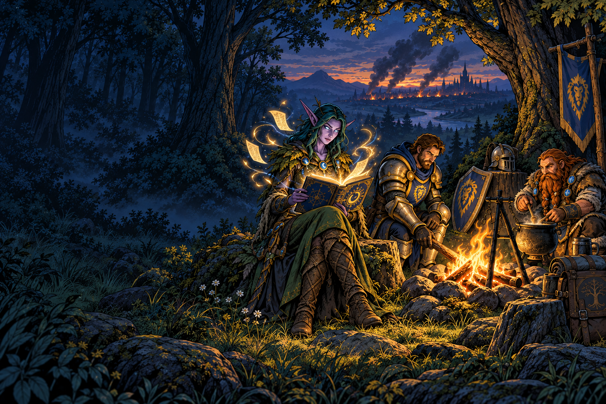
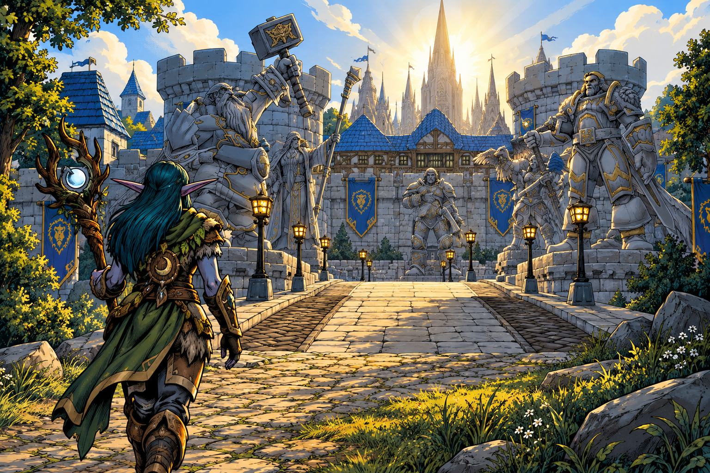
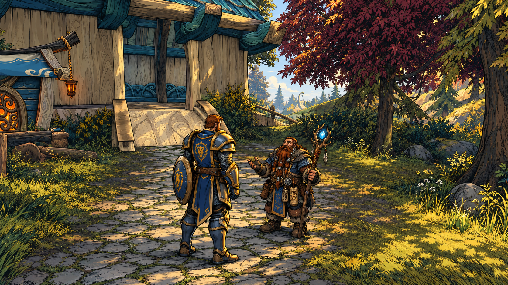

A life worth keeping
Character history, Scrapbook keepsakes, meaningful item stories, and memories in your own words.
Chronicle · Scrapbook · RelicsFirst it remembers Azeroth.
Then it remembers yours.
An enchanted journal of the people you adventured with, the places you discovered, the gear that mattered, and the stories you want to keep. Even while closed, it can reveal a shared road or a reason to say hello.

The stranger who saved the run. Your favorite campsite. The weapon you carried for half your journey. A road you meant to return to.
Character history, Scrapbook keepsakes, meaningful item stories, and memories in your own words.
Chronicle · Scrapbook · RelicsRemember companions, shared adventures, favors, and old rivals. Recognize why a familiar face matters.
People · Shared Moments · RivalsDiscovery toasts, voiced introductions, verified lore, personal map marks, and rumors you uncover at your own pace.
Discovery · Lore · TrailmarksRemember foes and meaningful victories. Learn loot through your adventures, keeping undiscovered identities hidden.
Bestiary · Learned spoilsGentle nearby pings and alignment toasts reveal shared plans, useful offers, and reasons to travel the same road.
Traveler Card · Signals · TooltipsPersonal goals, packing checklists, crafting plans, camp stories, and ideas for another character's journey.
Road Ahead · Blueprint · FiresideQuiet by default. The Tome's attention belongs to the world you're playing in.
Narrated discoveries · six remembered stories

A first arrival, remembered.
01 / 06Stormwind · Place
Places introduce regions, settlements, landmarks, dungeons, and battlegrounds. People remembers individuals, cultures, organizations, and factions. Things gives voice to relics, books, crafted works, materials, and meaningful objects.
A qualifying discovery is saved first. A brief toast establishes the place, then an original, recurring narrator gives it atmosphere and context.
Light 4–8s · Standard 8–18s · Major 18–35sRare, relevant cues recall a saved memory, unfinished intention, keepsake, or new loot knowledge. Ordinary returns stay quiet.
Combat defers presentation. Supported dialogue and cinematics take priority. Transcripts and deliberate replay remain in the Tome.
Choose a subject to see the cursor and its contextual tooltip.
Comic concept previews · illustrative records · no other HUD

Human Paladin · Friendly traveler
These are comic visual concepts with sample records, not captured gameplay or a finished interface. Relic and recipe objects illustrate the subjects; their actual tooltips belong to supported item and recipe views. A private crafting goal can match a shared offer without sending that goal.
Everything planned for the Tome, in five expandable sections. Read as much—or as little—as you like.
Explore the complete Tome mockups →
Try an item offer · Try a to-do · Link a material
The Forever TomeOne book, five bookmarks, connected pages, navigation history, and a resumable place. Follow a person to a memory, a place, or an item, then return to where you were.
ChronicleA selective history of significant journeys, discoveries, leveling and specialization eras, profession milestones, companions, dungeons, and possessions. Preserve, edit, or remove your own written memories.
Born DaysA beginning page, early memories, and anniversary cues. The Tome distinguishes a witnessed beginning, its first remembered date, and a date you supply.
ScrapbookAn album of keepsake pages with eight templates, titles, personal writing, accents, optional local photos, and preview/edit controls. Compose a page when you choose.
Relics & KeepsakesRemember selected items, supported or confirmed origins, gifts or crafters, carrying/equipped eras, and linked adventures. Add why an item matters with Remember This Item.
Chronicle of the FallenA quiet memorial joining a character's beginning, meaningful life, companions, and ending. Conditional on reliable Forever Hardcore and death support.
Photography: planned, with the workflow still being tested.The intended experience includes optional picture invitations, separate local photos displayed on demand inside Scrapbook, and an opt-in mode for selected milestone captures. Exact capture/import steps and seamless screenshot-to-album behavior are not confirmed. Your writing survives an unavailable photo.
People & Familiar FacesMeaningful companion memories, first/latest saved moments, connected places, keepsakes, and private notes. A reunion cue can remind you why a name matters.
Shared MomentsTwo Tomes can keep a supported or mutually accepted factual anchor while each player keeps their own interpretation private. Shared events depend on reliable evidence and supported communication.
Promises & FavorsPrivate reminders or acknowledged shared loans, promises, gifts, and favors. Record partial fulfillment, completion, cancellation, or forgiveness. Gifts don't create debt.
Introductions & WitnessesKeep an acknowledged introduction or reliably established presence at a meaningful event linked to your memory.
Crossroads, Signals & Traveler CardChoose structured Needs, Offers, Intent, or Capability: materials, crafting availability, destinations, dungeon or friendly PvP plans, a chosen role, exploration, safe quest overlap where supported, or willingness to help. With nearby discovery enabled, a gentle ping and toast can surface an aligned plan, goal, need, or activity among participating travelers.
They Can Help / You Can Help / Shared RoadEligible shared choices reveal a material connection, crafting help, or overlapping plans. Ask About This prepares a message for you to review and send. Conversations, trades, and invites remain your actions.
RivalsRetrospective first/latest clashes, places, supported results, your own past character context, and notes or keepsakes. Detailed history waits until combat ends.
Sharing is off by default.Choose fields, audience, duration, and optional quantities. Preview, pause, or clear your card. Targeted, group, and guild scopes are distinct where supported. Peer exchange requires eligible communication and sharing choices; no automatic nearby-player radar.
Discovery Toasts & NarrationQualifying first discoveries coordinate a brief place introduction and a recurring original voice. Major cities, supported first dungeon entrances, regions, settlements, and eligible landmarks have different weight and atmosphere. Selected major personal/memorial narration requires approved content and reliable triggers.
Your first arrival, your controlsEach character keeps their own discovery history; account-familiar places can use concise introductions. Full/concise, major-only, voice-off, volume, subtitle, stop, and deliberate replay choices. Opening a page doesn't automatically play audio.
Forever Lore & Landmark ArchiveVerified, spoiler-aware lore by place or topic, recognized landmarks, and Your Memories Here. Shared world facts remain distinct from your writing.
TrailmarksMark Here, add a title, type, note, and optional memory or landmark link. Browse, edit, revisit, or delete meaningful personal places.
RumorWhisper → Hint → Strong Hint → Reveal. Follow curated mysteries or write private ones, choose how much help you want, set them aside, and link them to a place or plan.
BestiaryEncountered creatures, rares, and bosses; truthful credited victories and supported death history; learned spoils; links to memories, Relics, and Scrapbook. Undiscovered loot identities stay hidden; unknown counts appear only with a trustworthy total.
Old Roads & The Last TimeMeaningful journeys and occasional return cues recall your own supported place history. Familiar travel acquires a past.
Unfinished StoriesA dormant intention, set-aside rumor, or unfinished journey can rarely resurface when its context matters again.
Tome WhispersRestrained cues across memory, discovery, lore, journeys, crafting, war, rumors, and Relics. One attention budget, category toggles, Quiet/Normal/Talkative settings, and safe deferral. Ordinary repeated discoveries stay silent.
Road AheadA short personal to-do list with private notes, a return summary, edit/complete/set-aside/reactivate controls, and links to places, rumors, crafting, or camps. You mark progress; completed goals can become Chronicle memories.
PackYour own journey presets: supported repairs, bag space, and pinned consumables, tools, items, or materials. Unavailable checks become honest manual reminders.
Blueprint & Crafting LedgerKnown recipes where supported, profession milestones, selected goals, Have/Need/Missing/Complete ingredients, progress, crafted Relic links, and optional promoted needs or offers.
Legacy Loom & Journey SeedsExplainable ideas drawn from owned character histories and supported Legacy facts: another class, role, profession, region, or kind of adventure. Pin or dismiss a seed; keep memory-based ideas when Legacy information is unavailable.
CampwrightSupported camp context, exposed utilities/capacity, your profession contributions or chosen reminders, and related camp memories, Trailmarks, or Scrapbook pages. Useful place and contribution reminders remain when detailed camp inspection isn't supported.
FiresideAsk the Fire, Tale of This Land, Tell a Story, Road Ahead, and Rumor: curated questions, verified local tales, personal storytelling prompts, and ideas for the next adventure. Review and send anything you want to share yourself.
Camp ReflectionRemember what happened, who mattered, what you want to preserve, and where you want to go next.
Friendly playersFamiliar recognition, one concise saved connection, and up to three eligible opportunities from shared choices. A stranger can have a useful opportunity; an old companion can simply carry a memory.
Hostile playersOld-adversary recognition with minimal combat context. Detailed first/latest clashes and supported historical results are retrospective.
Creatures, rares & bossesSupported encounters, defeats or victories, truthful death history, compact discovered spoils, rare recognition, significant memory links, and reliable unknown-loot counts where available.
Items, recipes & landmarksRelic identity, supported/confirmed origins and remembered eras; crafting-goal relevance and missing ingredients; recorded place discovery, memories, and relevant Trailmarks.
What peers receiveOnly selected structured card data and separately approved quantities. Exact recipe or safe quest queries preview disclosures. Shared Moments carry supported or accepted facts; interpretation stays local.
What stays privateNotes are hidden from tooltip text by default and never sent to peers. Chronicle writing, photos/captions, relationships, full bags, full recipe lists, and full quest logs are excluded from Traveler Cards.
Tooltip choicesOff, Minimal, Standard, or Detailed, bounded to relevant information. Full stories open in the Tome. A selectable equivalent view is planned for controller access.
Comfort & accessibilityMouse/controller primary workflows, hybrid switching, readable text, adjustable scale, reduced motion, narration/subtitle and sound controls, privacy and retention settings.
Help, data health & updatesEmbedded Help, safe technical diagnostics, backup guidance, practical text export where feasible, and updates designed to protect authored history. If a Forever change breaks a capability, isolate the affected feature and preserve memories.
Memories and photos stay local. Sharing starts off and requires deliberate choices. No cloud account is needed, and every addon feature is free. Opening a tooltip doesn't send a conversation, offer a trade, or invite anyone.
The full experience is planned. Photography, shared-player features, controller support, and Hardcore memorials are still being built and validated, with availability depending on what Forever supports. This page is a guild interest check, not a finished release.
Pick your answer and up to three favorites. Tell me what you'd use during a normal week—and what would make you turn it off.
“I know that person.
This place has a memory.
This item has a story.
We're going the same way.”